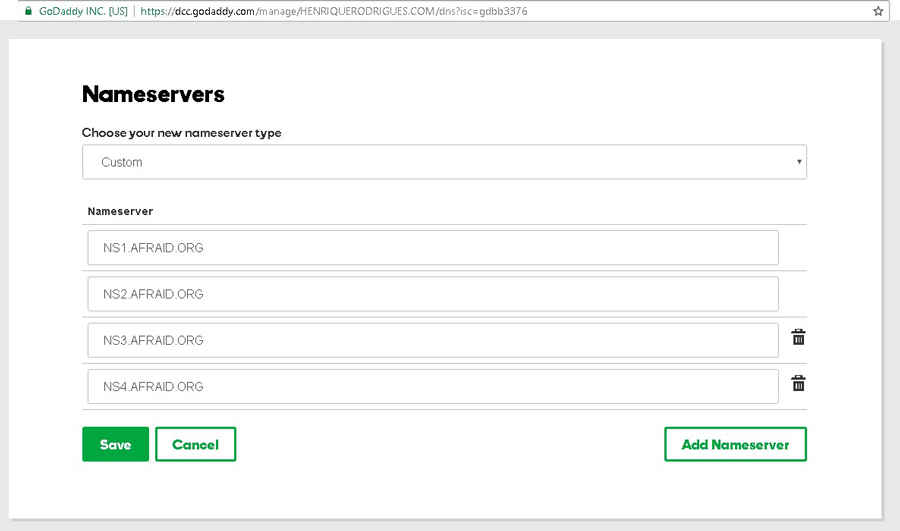
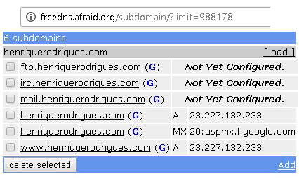
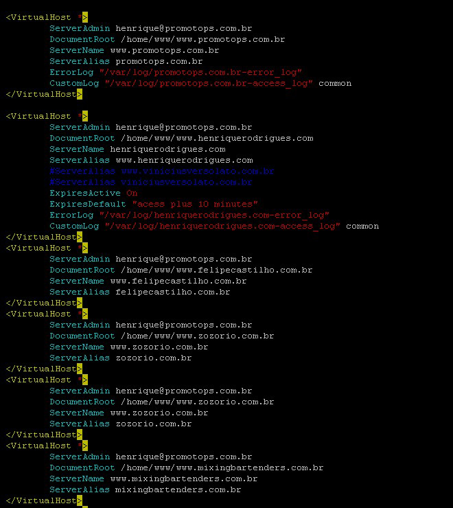

My idea with this website is to scratch the surface of all the topics proposed, maybe crack one or another, the tone I use here is humorous, as I tough Anthony will need to correct a lot of these, so let me give him a light read, anyway Anthony if you feel like joking when it's time to grade this, please don't. All the effort was put in making a very strong complete and well designed HTML and CSS. I opted to not use JS because I didn't have too and I probably already spent more time doing this assigment that anyone else. To your comfort, the orange links are Internal and link to a ID somewhere in this page, the blue ones are external, and if I didn't mess up should all appear in the Bibliography, that is called bibliography but includes where I got my images too, go figure...
How the web works!?
History of the Web; Once upon a time...
Or in March 1989 to be more precise there was a guy named Tim Berners-Lee, he worked at CERN (yes, exactly those guys from Supercolliders and God Particle) at that time, and seeing the potential of the fast growing internet, he decided to explore a new Technology called Hyper-Text. He showed his idea to his boss, who, as any other boss when faced with some super marvellous idea, said no. Or being more precise again, write on the cover of the project:
"Vague but exciting" - Mike Sendall about the invention of the Internet.
Poor Tim only have time allocated to his project one year and a half later, in September 1990. Using the NeXt computer, Steve Jobs' product, in just one month he managed to create the three key technologies that shape the web today, HTML, URI and HTTP. In 1993 Tim convinced CERN to make all the code for the web available and royalty-free forever. Since 1994 Tim Berners-Lee is a founding member of World Wide Web Consortium(W3C).
And that is when and how the World Wide Web that we know and love today was born.
Hyper Text Markup Language, the how I write this assigment
Hyper Text Markup Language or HTML, is the language used to give structure to web pages, HTML is not a programming language, you don't have a process that can be repeated in HTML, normally an HTML will be read once, from top to bottom and rendered by the browser. That being said, it's good to clear that you can use CSS and JavaScript "shenanigans" to influence how the page is going to appear, and even if some parts of HTML will be omitted based on the screen size or some pre established function.
The beatifully written HTML used to build this page is here:
In 28 October 2014Timothy Leary, I mean, Tim Berners-Lee and his friends in the W3C and WHATWG from Google, Apple and Microsoft (seeing the performance of IE, I'm sure this last guy was not paying any attention) published a new major revision of HTML, this one being the fifth, together with all the promises that most of the changes this time are for good, that they will probably break in HTML6, they introduced a lot of features, recognizing for example CSS and JavaScript as the official Style and Script language of HTML. And the best part is that the alternative was XHTML, trust me here, this revision was great just for that reason alone.
The whole package is known as HTML5, where you use the HTML to create the structure of the document, the CSS to make it look beautiful and finally the JavaScript to make it jump around, and creepily pin-point the location of your visitors.
URI, URL or what you type to get to sites, when you are not searching
URI means Uniform Resource Identifier, and is a string of characters that are used to name or identify resources in the Web, it works like an address, and as in addresses the good ones cost more money. In the Real Estate realm of the web, organizations called NIC, for Network Information Center, affiliated to the governement initially own all domains from a sub domain, In Example the most common .com.br for Brasil, and .ie for Ireland. They set the rules as how to deal those domains, then some companies called registrars make agreements to have the right to deal those domains too, Like godaddy.com World wide, registro.br in Brazil and register.ie, Hostingireland.ie and many many others to ireland.
After you buy your domain, you need to setup where the DNS information for the domain will be. Most of the registrar offer DNS too, but if you have alot of domains in different regions, like .com ,.ie and .com.br as is my case, you may want to join everything under a DNS. The best option in my opinion is Afraid.org they are free and very reliable. To do this you first go to the registrar, and forward all the DNS traffic of this domain to afraid.org like this:

The DNS records of HenriqueRodrigues.com in Godaddy.com The 4 records are set to 4 different Domain Name Servers kept by Afraid.org
After you first set this up, every other DNS server now know that they need to ask the location of subdomains of henriquerodrigues.com to Afraid.org, and even is one of their server is down they could ask the other 3 in the list. But the actual HTML to henriquerodrigues.com is not hosted in Afraid.org, so now what?
Now we configure the servers of afraid.org to tell where the sub domain is, the sub domain being the first part of the url, for example the www. in http://www.henriquerodrigues.com is the subdomain here, you can even configure the domain without a subdomain to point somewhere http://henriquerodrigues.com the example is here:

This is the DNS records for henriquerodrigues.com
You can see that the A (from Address) Records are pointing to a IPv4 Address, and that the FTP, mail and irc aren't configured yet, There is a MX record pointing to Google Gmail Servers but that is history to another day.
Ok! Great, now we are all set right? Wrong! This only means that the traffic will be redirected to the servers, but we need something in the otherside to understand the requests and give the right replies, we need Apache!, the software type, not the Indian type
Geronimo disapproves the last joke. And yes, his name is Geronimo. I'm not being racist here.
If you have a CentOs as in my case, it's very easy to configure Apache, first you install everything, and I mean everything as you can see Apache dependencies:
# repoquery --requires httpd
/bin/bash
/bin/sh
/etc/mime.types
/usr/sbin/useradd
apr-util-ldap
chkconfig
httpd-tools = 2.2.15-55.el6.centos.2
initscripts >= 8.36
libapr-1.so.0()(64bit)
libaprutil-1.so.0()(64bit)
libc.so.6(GLIBC_2.4)(64bit)
libcrypt.so.1()(64bit)
libdb-4.7.so()(64bit)
libexpat.so.1()(64bit)
liblber-2.4.so.2()(64bit)
libldap-2.4.so.2()(64bit)
libm.so.6()(64bit)
libpcre.so.0()(64bit)
libpthread.so.0()(64bit)
libpthread.so.0(GLIBC_2.2.5)(64bit)
libselinux.so.1()(64bit)
libz.so.1()(64bit)
rtld(GNU_HASH)
system-logos >= 7.92.1-1
You will probably need Mysqld, PHP and Curl, and all the dependencies if you plan in doing anything useful with the web server but lets pretend we don't.
After installing everything, its time to type some very basic and intuitive commands in the console as:
sudo vim /etc/httpd/conf/httpd.conf
And then edit a very very /*"TODO:Insert Adjective here"*/ 1272 lines of code document, to let Apache reply to the browsers requests, like this:

The httpd.conf configuration of my server
But don't even sweet, the worst that can happen if you mess something up, is that a very concerned NSA Agent will knock on your door asking questions about that time you helped the terrorists DDoS a Surveilance Sattelite Down. It was a monday.
Anyway, you have alternatives to Apache, Microsoft IIS is one, that is Infinitly more expensive and InSecure, Infinity here is not a Hiperbole, Apache is a Free software running probably in a free Operation System, IIS is not, so don't use IIS, no one does. Use Apache, don't disapoint Geronimo again.
Hyper Text Transfer Protocol or how computers talk so you can see more pictures about cats
So if you are reading this from top to bottom, and I really don't envy you fot this, we already talked about what happens when the computers communicate and some configurations that let the communication happen, now lets talk about the language that they communicate via the internet so your browser can render Web Pages.
In this protocol, computers communicate by packets, in a process that look like this:
This Header was captured using Live Http Headers Firefox Addon and is the request for the online version of the index.html of this assigment.
In the first line you see what the browser is asking and what is the protocol, the second line show the host, the third is the browser, the others deal with the connection type, what the browser is expecting to receive, how the server should compress the information, etc. One important information in this packet is the third line from the bottom up, If-modified-Since.
HTTP/1.1 304 Not Modified
Date: Sun, 27 Nov 2016 17:52:32 GMT
Server: Apache/2.2.15 (CentOS)
Connection: close
Etag: "6b410ac-5586-5424c02c21af7"
Expires: Sun, 27 Nov 2016 18:02:32 GMT
Cache-Control: max-age=600
This Header was captured using Live Http Headers Firefox Addon and is the response from the server for the request showed here.
This was header of the server response, in the first line it replied HTTP/1.1 (The version of the protocol) and 304 that mean the page was not modified since the date especified in the request, if it was, the browser would reply with a header very similar to this, with a number 2xx instead of the 304, meaning sucess and with the HTML for this page above the header.
This is how computer communicate to deliver webpages. They only do that over and over, for every image, css, javascript, HTML and font-family that the browser show
W3C or against whom I fight to validate my HTML
So finally lets talk more about W3C or World Wide Web Consortium, the guys that make the standards for the web and try really hard to please everyone. Since Tim Berners-Lee founded it as you can see in the history part of this page the W3C growth to a very important organization, today they try to all the big companies that play a key factor in the web, and the users to be able to make good decisions, and they play the biggest role in trying to make the life of web developers, web users and companies that produce good browsers as easy as possible.
You can see HTML, CSS and DOM that is how JavaScript change HTML, in the list. They are done with HTTP, this meaning they think HTTP is ok and there is no need to mess with it anymore since 2014
So they create rules and build tools that help people obey that rules (what a lesson for some governments). One of this tools is the W3C HTML Validator, that is showing me 4 erros in the incomplete web version of this site right now, but that is because I'm a moron trying to insert a ordered list inside the code tag which is not possible.
Anyway, the W3C create standards, and that is good, almost every one like them, some pirates have 1.mixed2.feelings, but that is ok if you created the web, and your networth is less than half of what Larry Page spent on cars, and you spent your time pondering how many clicks is acceptable to steal a movie from Netflix, you are probably ok.